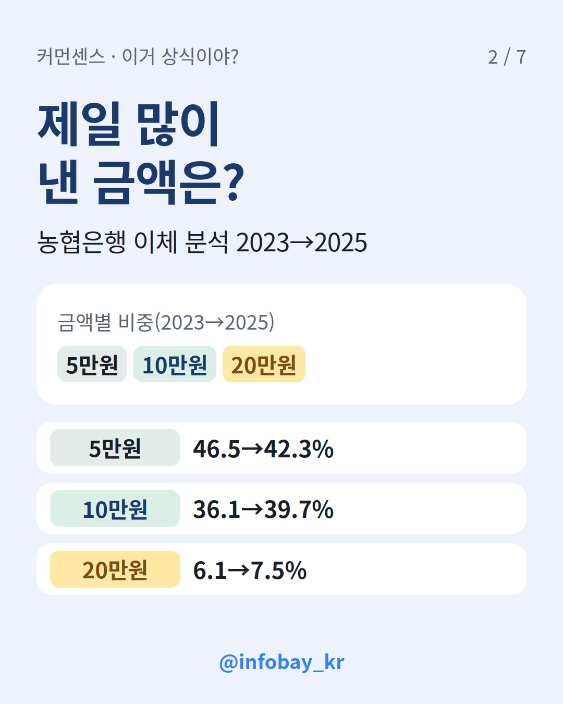
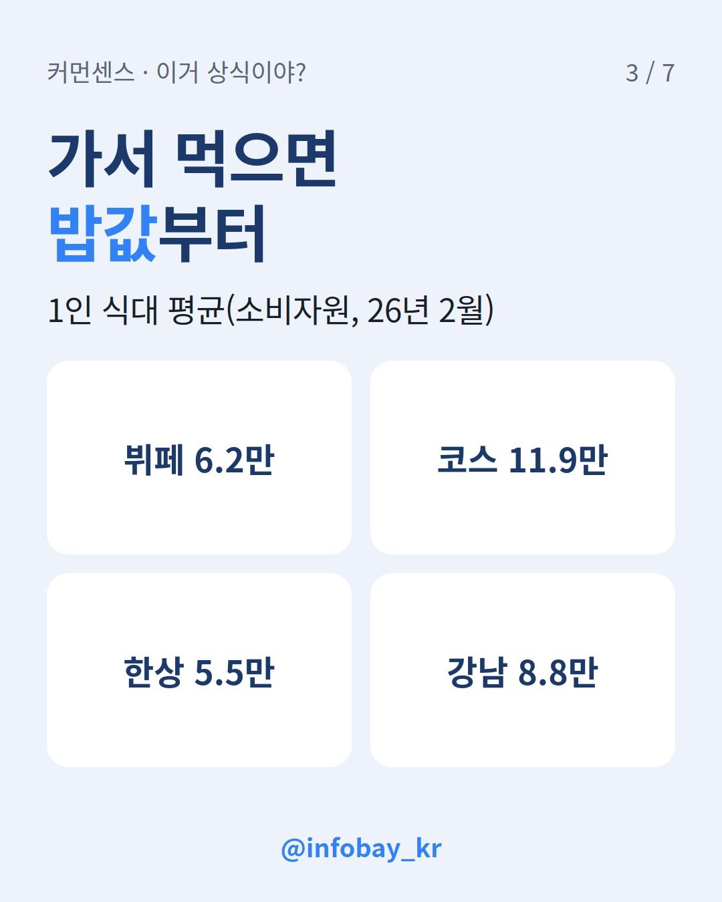
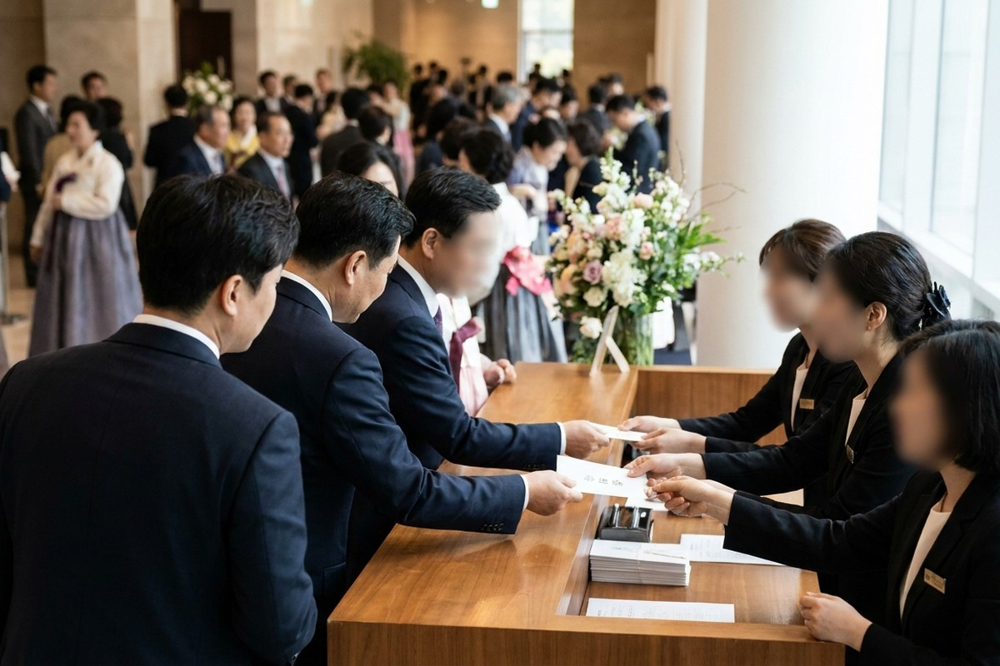
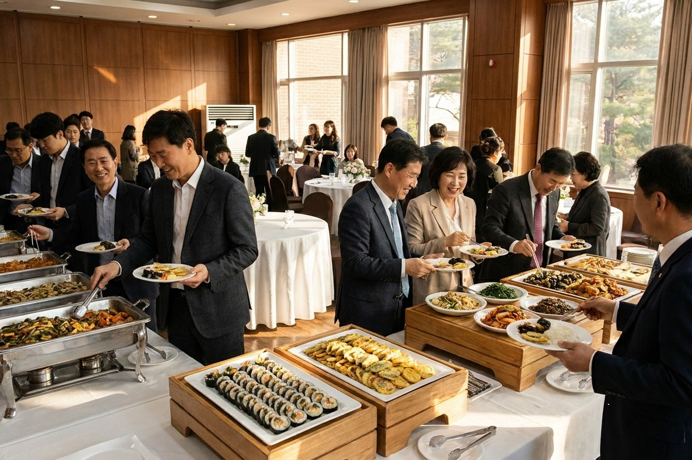

청첩장을 받고 "5만원 넣으면 욕먹나?" 싶다면 이 숫자부터 보세요. 작년 축의금 계좌 이체 평균은 11만7천원이었어요. 그런데 가장 많이 보낸 금액은 여전히 5만원(42.3%)이에요. 평균에 맞춰 무작정 금액을 올릴 필요는 없어요. 정작 따져 볼 건 따로 있어요. 결혼식에 가서 밥을 먹는지, 상대가 내 경조사에 얼마를 했는지, 누구와 같이 가는지예요. 이 글에서는 공개된 조사와 공식 자료만으로 상황별 기준표와 체크리스트를 만들었어요.
가장 큰 규모의 자료는 NH농협은행이 2026년 5월 공개한 트렌드 보고서예요. 2023년 1월부터 2025년 12월까지 축의금을 이체한 고객 115만 명의 거래 533만 건을 분석했어요. 연도별 평균은 2023년 11만원, 2024년 11만4천원, 2025년 11만7천원으로 2년 사이 약 6.9% 올랐어요.
금액별로 나눠 보면 그림이 달라져요. 5만원이 42.3%로 가장 많았고 10만원이 39.7%, 20만원이 7.5%로 뒤를 이었어요. 평균은 11만원대인데 제일 흔한 금액은 5만원인 거예요. 평균은 소수의 큰 금액에도 많이 움직이는 숫자예요. 이 보고서에서도 100만원 이상 송금 비중이 2023년 2.95%에서 2025년 3.17%로, 1,000만원 이상은 0.22%에서 0.36%로 늘었어요. 농협은행은 2024년에 시행된 혼인·출산 증여공제가 고액 송금이 늘어난 데 영향을 줬다고 봤어요.
흐름도 봐야 해요. 5만원 비중은 2년 새 46.5%에서 42.3%로 줄었고 10만원은 36.1%에서 39.7%로 늘었어요. "5만원이 아직 1등이지만 10만원이 바짝 따라붙었다"가 정확한 요약이에요. 계좌 이체 데이터라서 현장에서 내는 현금 봉투는 빠져 있다는 점도 기억해 두세요.
| 구분 | 2023년 | 2025년 |
|---|---|---|
| 평균 축의금(이체) | 11만원 | 11만7천원 |
| 5만원 비중 | 46.5% | 42.3% |
| 10만원 비중 | 36.1% | 39.7% |
| 20만원 비중 | 6.1% | 7.5% |
| 100만원 이상 비중 | 2.95% | 3.17% |
연령대와 지역에 따라서도 차이가 나요. 평균이 가장 높은 연령대는 20·30대(13만8천원)였고 60대 이상(11만8천원), 40·50대(10만7천원) 순이었어요. 지역은 서울 13만4천원, 부산 12만8천원, 광주 12만4천원, 인천 11만9천원 순이었어요. 같은 금액이라도 서울 결혼식과 지방 결혼식에서는 받아들여지는 느낌이 다를 수 있어요.

5만원 논쟁은 따지고 보면 밥값 문제예요. 하객 한 명이 식사하면 그만큼의 식대를 신랑·신부가 예식장에 내거든요. 한국소비자원이 2025년 처음 한 전국 결혼서비스 가격조사에서 1인당 식대 중간가격은 5만8천원이었어요. 지역 차이도 커서 서울 강남은 8만5천원으로 경상도(4만4천원)의 약 두 배였어요.
2026년 2월 조사는 식사 형태별로 나눠서 봤어요. 조사한 351개 결혼식장 중 대부분(83.2%)이 뷔페였어요. 평균 가격은 코스식 11만9천원, 뷔페 6만2천원, 한상차림 5만5천원이었어요. 서울 강남의 1인당 식대는 8만8천원이었어요.
이 숫자를 놓고 보면 기준이 나와요. 결혼식에 안 가고 마음만 보낸다면 5만원은 가장 많은 사람이 고르는 금액이에요. 눈치 볼 이유가 없어요. 직접 가서 뷔페를 먹는다면 얘기가 달라져요. 평균 식대가 6만2천원이라 5만원을 내면 밥값보다 적을 수도 있어요. 코스 요리가 나오는 예식이라면 10만원도 식대보다 적을 수 있고요. "5만원은 무례하다"보다는 "참석해서 먹으면 5만원은 밥값에 못 미칠 수 있다"가 맞는 말이에요.

아래 표는 위의 조사 숫자를 바탕으로 커먼센스가 정리한 출발점이에요. 정답이라기보다 "여기서 친분에 따라 올리거나 내린다"는 기준선으로 쓰세요. 금액은 요즘 흔히 쓰는 5만원 단위로 잡았어요.
| 상황 | 출발 금액 | 이렇게 정한 이유 |
|---|---|---|
| 불참, 가끔 연락하는 사이 | 5만원 | 이체 최빈값(42.3%). 식사를 안 하니 부담이 적음 |
| 참석 + 뷔페 식사 | 10만원 | 뷔페 평균 식대 6.2만원을 넘는 첫 5만원 단위 |
| 참석 + 코스 식사 | 15만원 이상 고려 | 코스 평균 식대가 11.9만원이라 10만원은 밥값보다 적을 수 있음 |
| 부부·가족 동반 참석 | 식대를 인원수만큼 더해 계산 | 기혼자 39.2%가 '동행자 유무'를 고려 |
| 내 결혼식에 와 준 사람 | 받은 금액 이상 | 기혼자 60.6%가 '과거에 받은 금액'을 고려 |
| 직무 관련 있는 공직자 | 5만원 한도 | 청탁금지법 시행령 가액 기준 |
표에서 가장 많이 놓치는 줄은 '부부·가족 동반'이에요. 혼자 갈 때 10만원이 적당했다면 둘이 가서 같은 금액을 낼 경우 1인당 5만원꼴이 돼요. 식대가 사람 수만큼 나가니까요. 반대로 불참이 확정됐는데 '갈지도 모르니까' 하고 참석 기준으로 낼 필요는 없어요.

같은 결혼식에서도 하객마다 생각하는 적정 금액이 크게 달라요. 결혼정보회사 가연이 2026년 8월 25~39세 미혼 506명과 기혼 502명에게 물었더니, 친구 결혼식에 직접 갈 때 적정 축의금은 미혼 평균 13만원, 기혼 평균 29만원이었어요. 두 배가 넘는 차이예요.
금액을 정하는 기준도 달랐어요. 미혼은 76.7%가 '당사자와의 친분 및 알고 지낸 시간'을 가장 중요하게 꼽았어요. 기혼은 복수 응답에서 친밀도(70.7%) 다음으로 '상대가 과거 내 결혼 때 낸 축의금'(60.6%)과 '동행자 유무'(39.2%)를 많이 꼽았어요. 가연은 기혼자가 직접 축의금을 주고받아 봤고 부부가 함께 참석하는 경우가 많다는 점을 차이의 이유로 들었어요. 이 조사는 신뢰수준 80% 기준이라 숫자는 경향 정도로 읽는 게 좋아요.
이 차이를 알면 축의금 논쟁 상당수가 이해돼요. 미혼 친구끼리는 친분만 보고 금액을 정하기 쉬워요. 기혼자는 둘이 가는지, 예전에 얼마를 받았는지까지 계산에 넣어요. 그래서 같은 10만원을 두고도 한쪽은 넉넉하다고, 다른 쪽은 적다고 느낄 수 있어요.
받는 사람이 공무원, 교사, 언론인처럼 청탁금지법 적용 대상이고 나와 직무 관련이 있다면 기준이 법으로 정해져 있어요. 국민권익위원회 안내에 따르면 직무 관련이 있으면 금품을 주고받는 게 원칙적으로 금지돼요. 다만 사교·의례나 부조 목적이라면 예외로 축의금·조의금은 5만원, 이를 대신하는 화환·조화는 10만원까지 허용될 수 있어요.
둘을 같이 보낼 때가 헷갈려요. 합산 한도는 10만원이지만 현금은 그 안에서도 5만원을 넘으면 안 돼요. 현금 7만원에 화환 3만원을 보내면 합계는 10만원이어도 현금이 한도를 넘는 셈이에요. 한도를 넘는 경조사비를 받았을 때 초과한 부분만 돌려주면 제재 대상에서 빠지지만 돌려주지 않으면 받은 금액 전체가 문제가 될 수 있어요.
모든 공무원 지인에게 5만원 한도가 걸리는 건 아니에요. 권익위 질의응답을 보면 직무 관련이 없다면 1회 100만원(회계연도 기준 300만원) 이하로는 법 위반이 아니라고 안내해요. 같은 공공기관 안에서 상급자가 위로·격려 목적으로 하급자에게 주는 경조사비는 5만원을 넘어도 허용될 수 있다고 해요. 직무 관련 여부는 관계, 시기, 감사·입찰 진행 여부 등을 따져 사안마다 판단해요. 애매하면 금액을 정하기 전에 국민권익위원회(110, 1398)에 먼저 물어보세요. 여기 적은 건 일반 안내라서 구체적인 사안의 법률 판단을 대신하지는 못해요.
청첩장을 받았을 때 아래 순서대로 답해 보면 대부분 금액이 정해져요.

숫자로 정리해도 끝까지 의견이 갈리는 장면이 있어요. 부부가 같이 가서 10만원을 냈다면 괜찮을까요? 식사를 건너뛰고 7만원을 냈다면요? 내 결혼식에 안 왔던 친구 결혼식은 어떻게 해야 할까요? 커먼센스 앱에서는 이런 상황 카드에 '인정/아닌데'로 투표하고 20대·30대·40대 결과를 나눠서 볼 수 있어요. 내 기준이 다른 세대와 얼마나 다른지 한번 비교해 보세요.
Q. 결혼식에 못 가면 축의금은 얼마가 적당해요?
가장 많은 사람이 고른 금액은 5만원이에요. 식사를 안 하니 식대 부담도 없어요. 아주 가까운 사이라면 참석할 때와 비슷하게 보내는 경우도 있어요.
Q. 참석해서 밥 먹는데 5만원 내면 실례예요?
실례라고 단정할 수는 없어요. 다만 뷔페 평균 식대가 6만2천원이라 밥값에 못 미칠 수 있어요. 형편과 관계에 맞게 고르세요.
Q. 부부가 같이 가면 얼마 내야 해요?
혼자 갈 때 금액에 한 사람분 식대를 더한다고 생각하면 쉬워요. 뷔페 기준으로 혼자 10만원이었다면 둘이 갈 때는 15만원 이상을 생각해 볼 만해요.
Q. 공무원 친구한테도 축의금은 5만원까지만 내야 해요?
직무 관련이 없는 사적인 친구라면 5만원 한도가 바로 적용되지는 않아요. 직무 관련 여부는 상황별로 판단하니 애매하면 국민권익위원회(110, 1398)에 확인하세요.
Q. 축의금 평균이 11만7천원이면 10만원은 적은 거예요?
평균은 고액 송금에 끌려 올라가는 숫자예요. 실제로는 5만원과 10만원을 낸 사람이 합쳐서 80%를 넘어요. 10만원은 여전히 흔한 금액이에요.
*2026년 10월 31일 기준, NH농협은행 보고서 보도·한국소비자원·국민권익위원회 자료 확인*